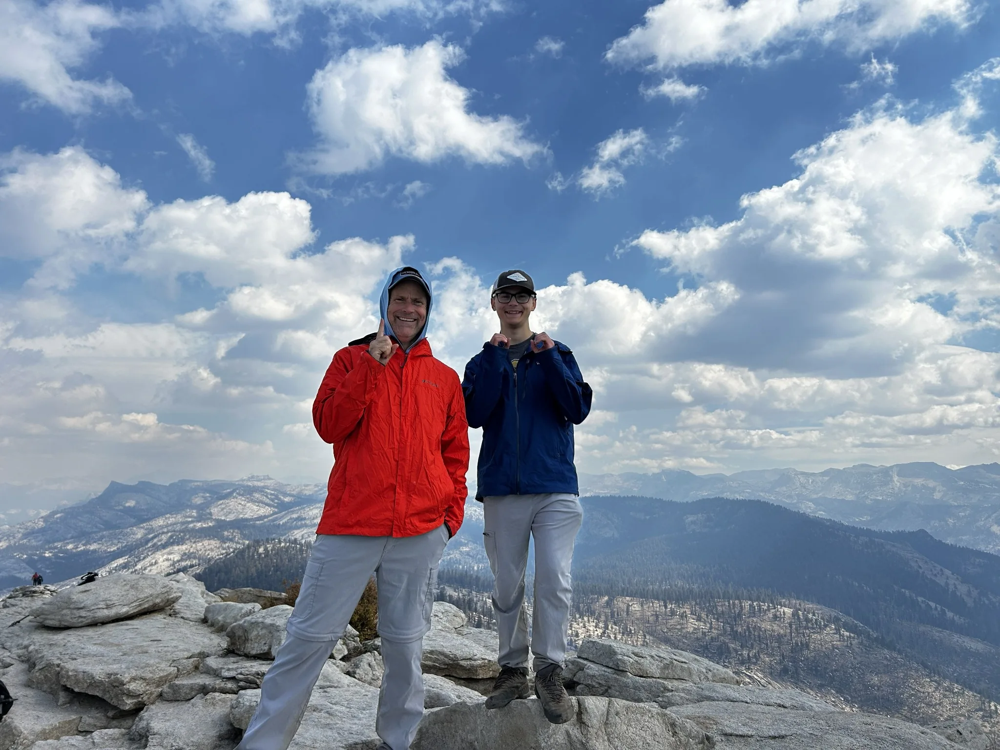

EXPLORE
Experience Wonder
Discover Utah’s extraordinary landscapes and experience the awe that comes from being immersed in nature.
ABOUT TAKE A HIKE UTAH
Utah is an extraordinary place to explore. From red rock canyons and desert landscapes to alpine lakes and towering mountain peaks, there’s a remarkable variety of experiences waiting just beyond our doorsteps.
But knowing where to begin isn’t always easy.
For someone new to hiking, even a simple outing can bring questions. Where should I go? What should I bring? How difficult is the trail? Am I prepared?
Take a Hike Utah was created to help answer those questions—and to encourage people to discover just how rewarding time outdoors can be. It’s a free resource for finding appropriate hikes, preparing for adventures, and building outdoor skills at your own pace.
To make hiking accessible and rewarding for people of all experience levels, inspiring exploration, personal growth, and meaningful connections with nature and one another.
There’s something special about heading down a trail.
Sometimes it’s the scenery that stays with us. Sometimes it’s the satisfaction of reaching a summit or completing a distance we once thought impossible.
Other times, it’s a conversation with someone along the way, a quiet moment away from everyday distractions, or simply the realization that we’re capable of more than we imagined.
The destination matters, but often it’s the experiences along the way that mean the most.
We believe hiking offers opportunities not just to discover new places, but to grow as individuals and strengthen our connections with the people and world around us.
These three principles guide Take a Hike Utah:
EXPLORE
Discover Utah’s extraordinary landscapes and experience the awe that comes from being immersed in nature.
GROW
Build confidence, resilience, and outdoor skills by overcoming challenges, accomplishing goals, and exploring new experiences.
CONNECT
Strengthen relationships, create lasting memories, and develop a deeper connection with the natural world.
You don’t have to be an experienced outdoorsperson to enjoy hiking.
You don’t need expensive gear, exceptional fitness, or ambitions to climb mountains. You just need a place to begin.
Take a Hike Utah provides practical trail guides, helpful resources, and a path for gradually building experience and confidence.
Our hiking journey begins with approachable adventures and points toward longer distances, greater elevation gains, and more challenging terrain as your skills develop. The current trail collection focuses on First Steps, with guidance for the stages ahead.
Whether you’re taking your first walk through a canyon, exploring a trail with your family, or preparing for a mountain summit, there’s always something new to discover. There’s no requirement to seek harder hikes; choose what fits you and your group.
Explore your hiking journey →Some of the most meaningful experiences in my life have happened on hiking trails.
What began as an opportunity to spend time outdoors with my son gradually became something much more important.
Together, we explored new places, pushed ourselves through difficult climbs, and discovered landscapes that left us in awe. Along the way, we built confidence in our ability to overcome challenges—both physical and mental.
But perhaps the most meaningful part of those experiences was the relationship we built.
There is something about spending hours together on a trail, away from the distractions of everyday life, that creates opportunities for connection. Sometimes that meant meaningful conversations. Other times, it was simply sharing the experience of reaching a summit or standing quietly before an incredible view.
Eventually, our adventures took us to our 100th summit together. It was an accomplishment we’re proud of, but the number itself isn’t what makes it meaningful.

What matters most is everything that happened along the way.
Those experiences changed the way I think about hiking. I came to appreciate that a trail offers much more than a destination. It can provide a sense of wonder, an opportunity to grow, and a way to strengthen relationships with the people who matter most.
That’s why I started Take a Hike Utah.
I want to help others discover those same possibilities, whether they’re heading out on their first hike, exploring somewhere new with family or friends, or taking on a challenge they once thought was beyond their reach.
You never know what you might discover when you take that first step.
Take a Hike Utah is starting with a simple goal: make it easier for people to get outside and enjoy hiking.
We’re building a collection of trail guides and practical resources designed to help hikers progress from their first outings to more ambitious adventures.
Over time, I hope it can also become a way to encourage more people—particularly young people and families—to experience the outdoors together.
We’re starting small, learning as we go, and looking forward to seeing where the journey leads.
Every adventure starts somewhere. We hope you’ll find yours here.
Find your next hike ↗